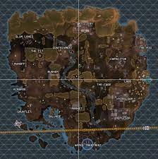
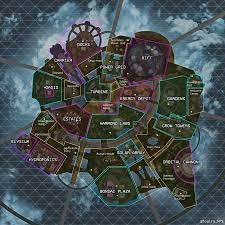
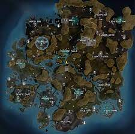
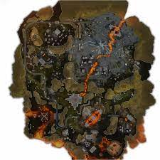

Maps
Kings Canyon
Once a simple settlement on Solace, the island known as Kings Canyon didn't thrive until the IMC chose it as a hub for research and development. It housed an airbase, a water treatment plant, and a plethora of other facilities to support IMC operations. To blow off steam, the IMC soldiers stationed here would compete in a gladiator-esque combat arena they nicknamed ‘Thunderdome’, the predecessor of the Apex Games. Secretly, it was also home to underground facilities that hid the IMC’s more radical operations–like a highly classified project on Phase tech and a program to create a simulacra army powered by a single brain. In the years since the IMC left the Outlands, the island has undergone many changes due to Syndicate construction projects and freak incidents. The most notable being the destruction of the Repulsor Tower, an underground explosion that sank Thunderdome and Skulltown, and a ship crash that obliterated the northern edge of Kings Canyon. Now, the Syndicate is further altering the landscape with terraforming projects to its caves, and salvage operations for Relic (the area formerly known as Skull Town). But no matter how it changes, Kings Canyon will always be the first home of the Apex Games.
Olympus
Once a city built on dreams, Olympus was a utopia floating in clouds above Psamathe. Here, the brightest minds in the Outlands could gather and exchange ideas, leading to breakthroughs in the sciences and arts. However, an accident in an experimental research facility led to the creation of the Phase Rift (a massive bubble of Phase energy), and the Outlands’ best and brightest quickly abandoned the city. With the support of the Mercenary Syndicate, Hammond Robotics stepped in to transform Olympus into a new stage for the Apex Games. Since then, a ship from the Icarus Fleet brought a deadly virus along with powerful Medusa Vines to Olympus. While the virus was cured, the vines remained and kept the ship docked to the city. Additionally, a disastrous attempt to transport Olympus to a new location using phase technology sent the city into a tailspin, its structures being littered across the terrain as it stabilized. The changes shook up the Games, creating new challenges for participating Legends.
Storm Point
This deserted island wasn't always so deserted. Beautiful and teeming with resources, Storm Point was the prime candidate for early IMC expeditions to planet Gaea. However, IMC settlement teams quickly discovered that intense tropical storms plague the island and a permanent settlement was established nearby–the city of Suotamo. As the city grew, the IMC built power-generating storm catchers on Storm Point to keep up with their energy needs. When the IMC pulled out of the Outlands, the storm catchers fell into disrepair. Left with only one functional storm catcher and few resources, the naive citizens of Storm Point decided to pull it down for parts. The absence of the storm catcher exacerbated the surrounding storms, causing them to overtake the island. Later, a survey of the area revealed previously unknown settlements but no survivors. The island was then abandoned for many years, save for the occasional scavenger or pirate, until it caught the eye of the Mercenary Syndicate. They knew there was old IMC tech and dangerous wildlife on Storm Point, but they didn’t realize how deadly the island was until the rumblings of a colossal sea beast woke the old IMC defenses. Now, Spectres roam fully-stocked IMC Armories, giving Apex Games competitors a new challenge.
World's edge
A harsh planet beset by intense volcanic activity, Talos was once deemed uninhabitable, and only small luddite settlements took root there. However, it became a hotbed of IMC activity when a rare mineral compound was discovered beneath its surface. Heat-reducing towers were built to super-cool its natural lava flows and allow resource extraction - the facility that housed them was optimistically dubbed “New Dawn”, and the town of World’s Edge grew around it. Decades ago, an explosion in one of the towers covered the surrounding area in a lethal flash freeze. World’s Edge was abandoned, its only remaining inhabitants a small community of hunters who once spurned modern technology (but tentatively accepted it again under the guidance of their beloved local hero, Bloodhound). However, its ruins and the planet’s energy-rich soil drew the attention of two critical groups: the Mercenary Syndicate and Hammond Robotics. Today, World’s Edge is the second home of the Apex Games and a key operational center for Hammond Robotics, which installed the latest in modern mining technology - the Planet Harvester - to begin its own resource extraction.